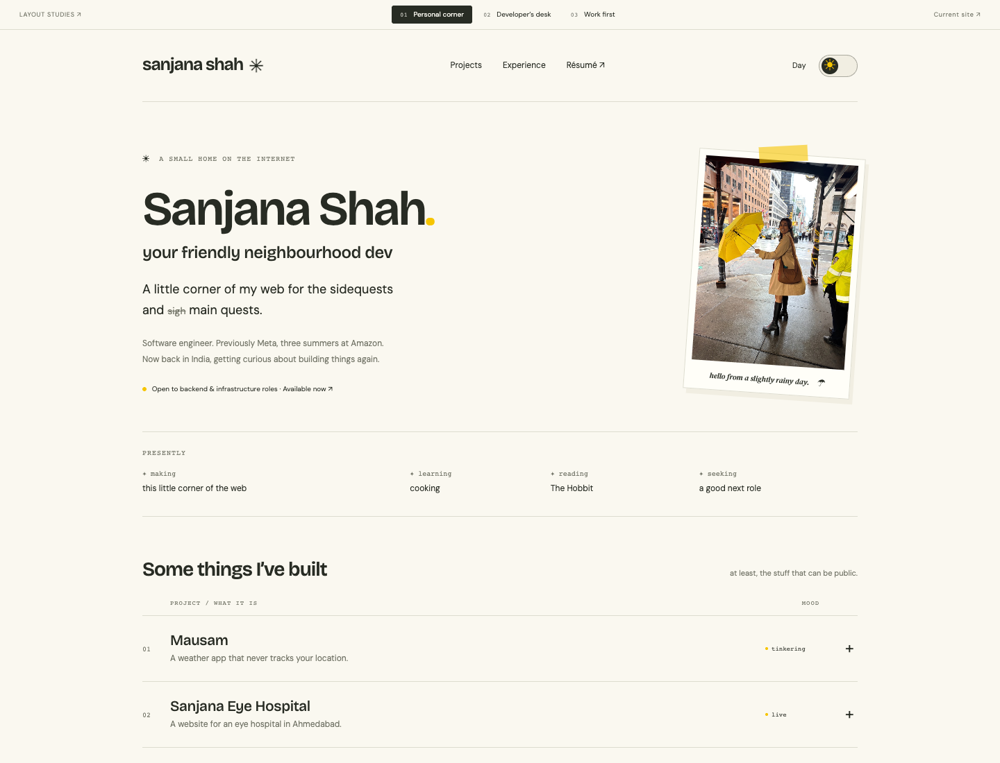
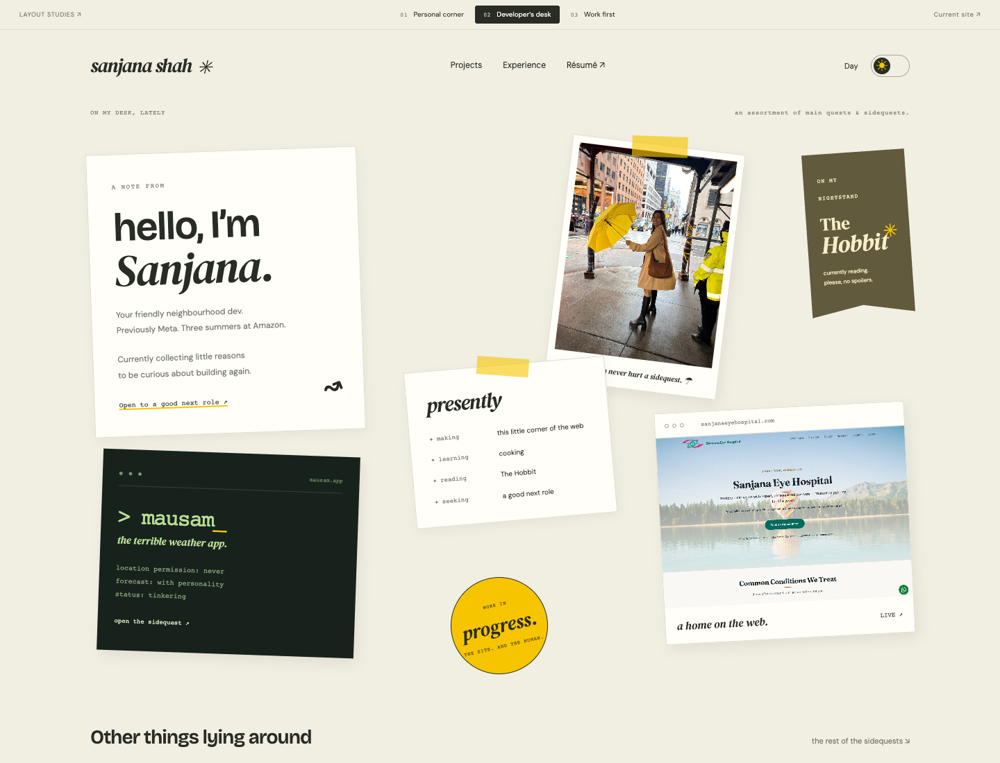
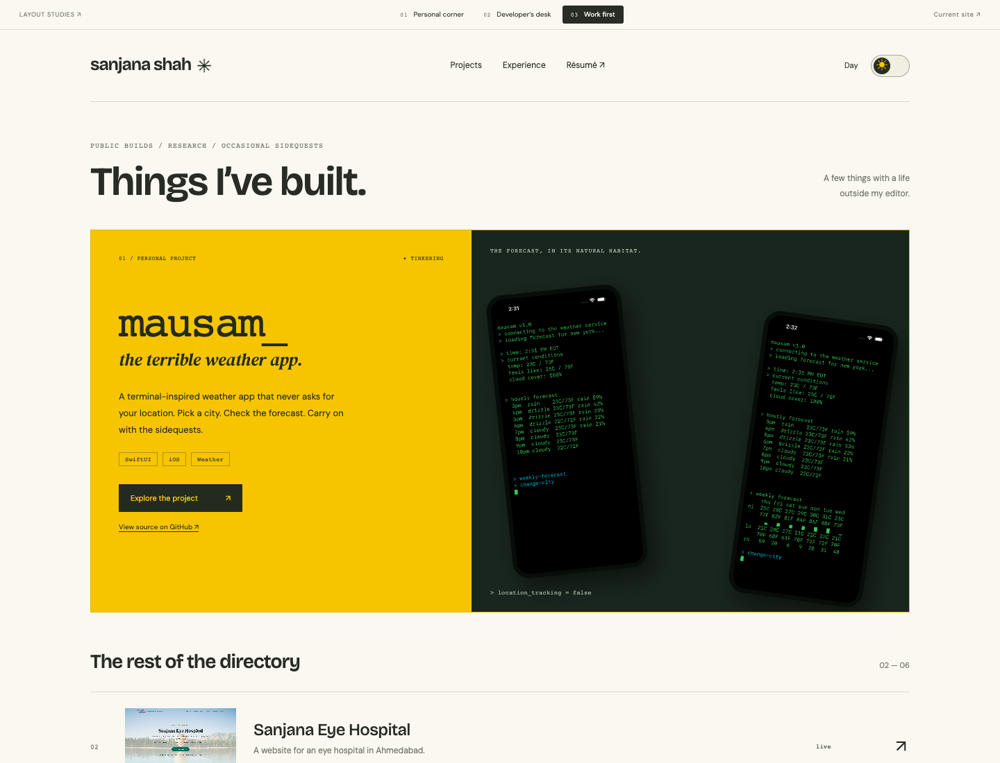

SAME HUMAN. SAME YELLOW. THREE DIFFERENT HOMES.
Three ways home.
A personal corner, a developer’s desk, and a portfolio that lets the projects lead.
Each keeps your photos, your voice, and the day/night switch.

01
A personal corner
↗A compact introduction, a presently list, and an expandable project index.

02
A developer’s desk
↗Notes, photographs, bookmarks, and project previews with a little room to play.

03
Work first
↗Mausam takes the lead. Real project imagery, a clear directory, and personality in the margins.
My pick: the personal corner, with a few tactile details borrowed from the desk.